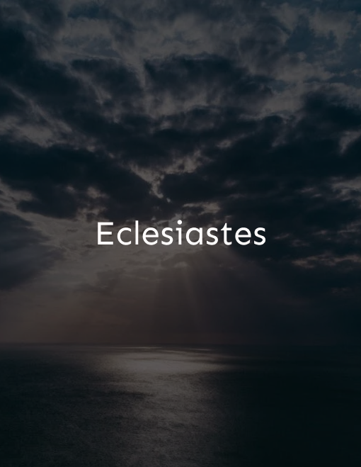

Religioso
Esta seção é dedicada a textos sagrados Aqui, você encontrará uma coleção inspiradora de textos sagrados, estudos teológicos, reflexões espirituais e guias práticos para nutrir sua jornada espiritual.
Aproveite!
-

Eclesiastes
A vida é vaidade, tudo é fugaz. Eclesiastes discute a insignificância humana diante do universo. A obra faz parte da seção da Bíblia dedicada à sabedoria.
Escute Aqui! -
Os Sermões
Sermões que abordam temas que até hoje permanecem atuais, como luta contra injustiças, perdão e o sentido da vida.
/ Escute Aqui! -
Rute
Revela como Rute se tornou em um dos antepassados de Davi através da união com um familiar de seu ex-marido, já falecido
/ Escute Aqui!